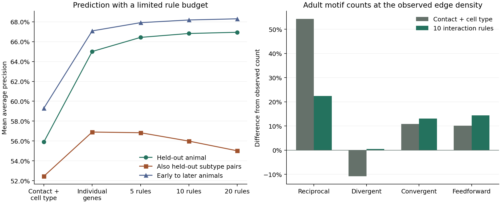

Which gene pairs help predict synapses?
Take two touching C. elegans neurons and ask whether the first forms a chemical synapse onto the second. A source gene A × target gene B term multiplies A's expression in the source by B's expression in the target. That gives the model a way to score their combination alongside physical contact and broad neuron type.
All evaluations use the same late-embryonic expression profile for each neuron subtype. The post-hatching specimens provide contact and synapse measurements.
Prediction on held-out specimens
Loading wiring-rule results…
Held-out model scores
| Model terms | Average precision | Log loss |
|---|
Compare scores for individual specimens
| Specimen | Baseline AP | 10 pairs AP | Baseline loss | 10 pairs loss |
|---|

Gene pairs for follow-up
Pairs are ranked by how often the 10-pair model selected them across the specimen-only folds. The sign shows whether a selected interaction raised or lowered the model's synapse score, holding its other terms fixed. Repeated selection nominates a candidate for further study.
| Source × target gene | Selected | Positive | Negative |
|---|
Adult wiring motifs
Compare recurring arrangements of directed synapses in the observed adult network (Dataset8) with patterns from the baseline and the 10-pair model. Each prediction uses the highest-scoring held-out connections up to the observed adult edge count.
| Motif | Observed | Baseline | 10 pairs |
|---|
How the motifs are counted
Reciprocal pairs have connections in both directions. Divergent and convergent pairs share a source and a target, respectively. Feedforward triangles count A → B, B → C, and A → C arrangements. Extra reverse links can coexist with a motif.

How the comparisons work
Start with contact
The assay considers directed pairs among neurons with measured physical contact. The baseline uses contact geometry, developmental order, and broad cell type.
Add named expression terms
Source and target expression values enter as individual terms and selected source–target products. Each fold ranks the products using its training data.
Test on new specimens
One scheme withholds a full specimen. The stricter scheme also withholds the tested subtype pairs in both directions from training. The early-to-later split fits one model per rule budget on earlier specimens and tests each model on later specimens.
Scope of the evidence
The late-embryonic expression lookup is held fixed across evaluations. Age-related differences in the connectomes reflect measured post-hatching anatomy and synapses. The fitted interactions describe predictive associations in these data. Establishing a molecular mechanism would require direct functional evidence.
Methods, data sources, and reproduction instructions
A separate analysis reproduced candidate innexin pairings. Reproduced candidates · Reproduction methods